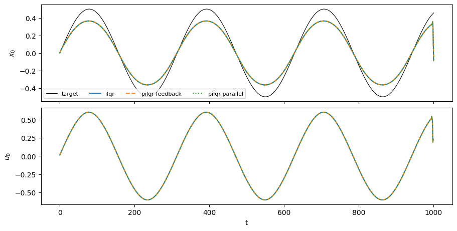
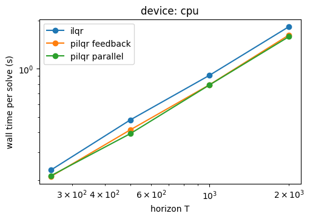

Parallel (associative-scan) solvers#
The Riccati recursion in LQR is sequential: step \(t\) needs step \(t+1\). However, the recursion can be rewritten as an associative combination of per-step elements, which jax.lax.associative_scan evaluates in \(O(\log T)\) parallel depth (Särkkä & García-Fernández, 2023). diffilqrax provides parallel counterparts of every solver:
sequential |
parallel |
|---|---|
|
|
|
|
|
|
|
|
The parallel versions take the same arguments and converge to the same solutions. This notebook checks that on a long-horizon iLQR problem and shows how run time scales with the horizon.
The parallel solvers do more total work, so on a CPU you should not expect a speed-up; at best they roughly match the sequential solver. The benefit appears on a GPU with long horizons, where the sequential solver is limited by its \(O(T)\) depth.
[1]:
import time as timer
import jax
import jax.numpy as jnp
import jax.random as jr
import matplotlib.pyplot as plt
from diffilqrax.ilqr import ilqr_solver
from diffilqrax.parallel_ilqr import pilqr_solver, dynamics_defects
from diffilqrax.diff_ilqr import dilqr
from diffilqrax.parallel_dilqr import pdilqr
from diffilqrax.typs import System, ModelDims, iLQRParams, Theta
jax.config.update("jax_enable_x64", True)
print("device:", jax.devices()[0])
device: TFRT_CPU_0
A long-horizon problem#
A stable tanh RNN, \(x_{t+1} = \tanh(U_h x_t + W_h u_t)\), tracks a slow sine wave in every state.
[2]:
N, M = 8, 3
k1, k2 = jr.split(jr.PRNGKey(0))
theta = Theta(Uh=0.8 * jr.normal(k1, (N, N)) / jnp.sqrt(N), Wh=jr.normal(k2, (N, M)) / jnp.sqrt(N), sigma=0.0, Q=None)
def make_model(horizon):
def cost(t, x, u, th):
return jnp.sum((x - 0.5 * jnp.sin(t / 50.0)) ** 2) + 0.1 * jnp.sum(u**2)
def costf(x, th):
return jnp.sum(x**2)
def dynamics(t, x, u, th):
return jnp.tanh(th.Uh @ x + th.Wh @ u)
return System(cost, costf, dynamics, ModelDims(n=N, m=M, horizon=horizon, dt=0.1))
params = iLQRParams(x0=jnp.zeros(N), theta=theta)
Same solution#
pilqr_solver has two ways to roll out a candidate step:
rollout="feedback"(default) runs the parallel Riccati scan, then a sequential non-linear rollout under the feedback policy, exactly likeilqr_solver. Every iterate is a feasible trajectory.rollout="parallel"uses multiple shooting. The states are also optimisation variables, the dynamics defects \(d_t = f(x_t, u_t) - x_{t+1}\) enter the local LQR, and the whole step is computed with associative scans. Iterates are feasible only at convergence, so we report the largest defect.
[3]:
T = 1000
model = make_model(T)
Us_init = jnp.zeros((T, M))
(Xs, Us, _), J, _ = ilqr_solver(model, params, Us_init, max_iter=200)
(Xf, Uf, _), Jf, _ = pilqr_solver(model, params, Us_init, max_iter=200, rollout="feedback")
(Xp, Up, _), Jp, _ = pilqr_solver(model, params, Us_init, max_iter=200, rollout="parallel")
print(f"ilqr J = {float(J):.10f}")
print(f"pilqr feedback J = {float(Jf):.10f} max|ΔU| = {jnp.max(jnp.abs(Uf - Us)):.1e}")
print(f"pilqr parallel J = {float(Jp):.10f} max|ΔU| = {jnp.max(jnp.abs(Up - Us)):.1e} "
f"max defect = {jnp.max(jnp.abs(dynamics_defects(model, params, Xp, Up))):.1e}")
ilqr J = 745.6031498673
pilqr feedback J = 745.6031498673 max|ΔU| = 1.2e-15
pilqr parallel J = 745.6031498673 max|ΔU| = 7.0e-13 max defect = 3.3e-16
[4]:
time = jnp.arange(T + 1)
fig, axes = plt.subplots(2, 1, figsize=(9, 4.5), sharex=True, layout="constrained")
axes[0].plot(time, 0.5 * jnp.sin(time / 50.0), "k", lw=0.8, label="target")
for (X, U), style, label in [((Xs, Us), "-", "ilqr"), ((Xf, Uf), "--", "pilqr feedback"), ((Xp, Up), ":", "pilqr parallel")]:
axes[0].plot(time, X[:, 0], style, label=label)
axes[1].plot(time[:-1], U[:, 0], style)
axes[0].set(ylabel="$x_0$")
axes[1].set(ylabel="$u_0$", xlabel="t")
axes[0].legend(ncol=4, fontsize=8);

Gradients agree too#
pdilqr is the parallel counterpart of dilqr. Both the forward solve and the adjoint LQR in the reverse pass use associative scans.
[5]:
Ts = 200
model_s = make_model(Ts)
U0 = jnp.zeros((Ts, M))
def loss(solver, th):
return jnp.sum(solver(model_s, iLQRParams(params.x0, th), U0, max_iter=200) ** 2)
g_seq = jax.grad(lambda th: loss(dilqr, th))(theta)
g_par = jax.grad(lambda th: loss(pdilqr, th))(theta)
for name in ("Uh", "Wh"):
a, b = getattr(g_par, name), getattr(g_seq, name)
print(f"dL/d{name}: relative difference {jnp.linalg.norm(a - b) / jnp.linalg.norm(b):.1e}")
dL/dUh: relative difference 9.8e-15
dL/dWh: relative difference 7.1e-15
Scaling with the horizon#
We time one jitted solve at several horizons. The absolute numbers depend on your hardware. On a CPU, all three scale linearly and take similar time. On a GPU, the "parallel" rollout should scale best.
[6]:
def time_solver(solve, model, n_repeat=3):
Us0 = jnp.zeros((model.dims.horizon, M))
f = jax.jit(lambda p, u: solve(model, p, u, max_iter=200))
jax.block_until_ready(f(params, Us0)) # compile
start = timer.perf_counter()
for _ in range(n_repeat):
jax.block_until_ready(f(params, Us0))
return (timer.perf_counter() - start) / n_repeat
solvers = {
"ilqr": ilqr_solver,
"pilqr feedback": lambda m, p, u, **kw: pilqr_solver(m, p, u, rollout="feedback", **kw),
"pilqr parallel": lambda m, p, u, **kw: pilqr_solver(m, p, u, rollout="parallel", **kw),
}
horizons = [250, 500, 1000, 2000]
timings = {name: [time_solver(s, make_model(h)) for h in horizons] for name, s in solvers.items()}
[7]:
fig, ax = plt.subplots(figsize=(5, 3.5), layout="constrained")
for name, ts in timings.items():
ax.loglog(horizons, ts, "o-", label=name)
ax.set(xlabel="horizon T", ylabel="wall time per solve (s)", title=f"device: {jax.devices()[0].platform}")
ax.legend();

How to adapt#
Switching solver: replace
ilqr_solverwithpilqr_solver(ordilqrwithpdilqr). The model, parameters and initial inputs are unchanged.Choosing a rollout: use
"feedback"when you need every iterate to be feasible, for example when stopping early. Use"parallel"for the most parallelism on a GPU.Non-convex costs:
make_psd="R"or"full"projects the local problem to be convex, which makes every scan element valid without regularisation retries.Gradient adjoint:
pdilqr(..., adjoint="sequential")solves the reverse LQR sequentially. This is useful for checking results or on a CPU.Benchmarking on a GPU: install a CUDA build of JAX and re-run this notebook. For a script version, see
examples/long_horizon.pyin the repository.